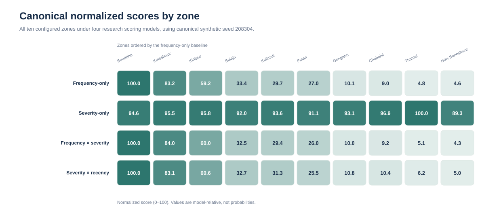
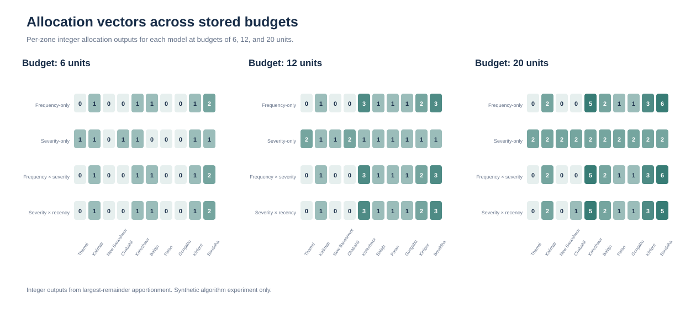
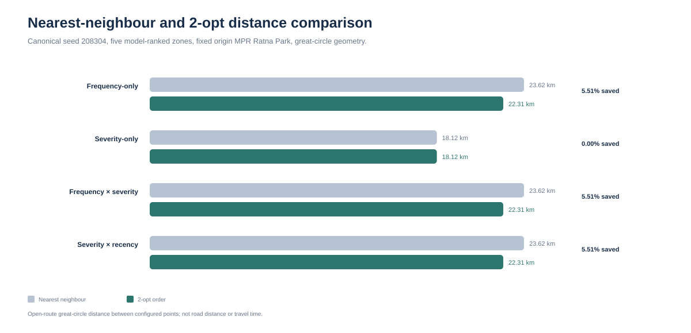
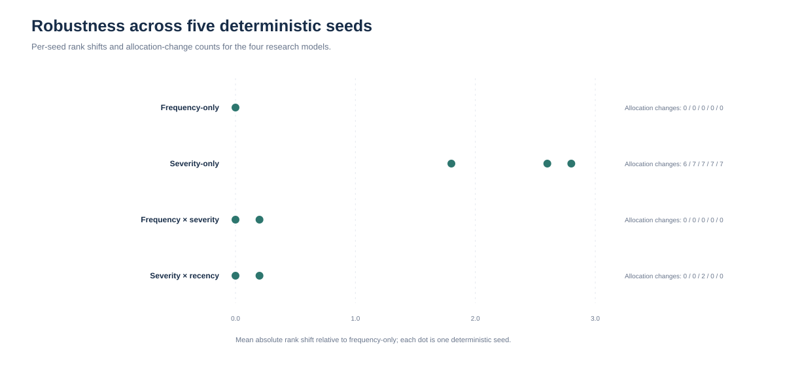

A reproducible computational study
When the formula changes,
what changes downstream?
Explore how four transparent scoring rules flow through spatial ranking, fixed-budget allocation, and a geometric route-order experiment—all on the same deterministic synthetic dataset.
The experimental baseline
One dataset. Four models. Shared downstream rules.
Loading dataset provenance…
01 / Scoring assumptions
Four ways to describe a zone
Each model uses the same assigned records. Only the aggregation rule changes.
Frequency-only
Fj = nj
Counts records assigned to each configured zone.
Severity-only
Vj = mean(si)
Uses the average configured severity for that zone.
Frequency × severity
Aj = Σ si
Aggregates configured severity across assigned records.
Severity × recency
Rj = Σ si · max(0.15, 1 − ai/30)
Applies the fixed 30-day linear age weight and 0.15 floor.
Canonical model comparison
Normalized scores and ranking are read from the committed research outputs.
| Model | Top-ranked zone | Zones with rank change | Mean absolute rank shift |
|---|---|---|---|
| Loading model results… | |||
Inspect every zone
Choose a scoring rule to inspect all ten normalized zone scores and ranks.
| Rank | Zone | Normalized score | Assigned records |
|---|---|---|---|
| Loading zone scores… | |||
02 / Integer apportionment
Allocation sensitivity
A largest-remainder rule converts normalized scores into integer outputs for the stored budgets.
—
Canonical 12-unit comparisonLoading the stored result…
Compare all zones
Select one of the experiment's stored allocation budgets.
| Zone | Frequency | Severity | Freq. × sev. | Recency |
|---|---|---|---|---|
| Loading allocation vectors… | ||||
Algorithmic unit counts only—not staffing guidance or a recommendation for any real organization.
03 / Geometric route comparison
Nearest neighbour vs. 2-opt
The experiment compares open-route great-circle distance across each model's five highest-ranked zones.
| Model | Nearest | 2-opt | Change |
|---|---|---|---|
| Loading route results… | |||
Configured-point geometry only. Not road distance, travel time, navigation, route safety, or an operational plan.
04 / Designed scenario variation
Does the pattern persist across seeds?
The repository stores five deterministic scenarios with the same record count and scoring assumptions.
| Model | Top zone across seeds | Mean rank-shift range | Allocation-change range |
|---|---|---|---|
| Loading robustness results… | |||
How to read this: the five seeds are deterministic designed scenarios, not independent field observations, a representative sample, or a confidence interval.
05 / Visual evidence
The experiment, made visible
These figures are generated from the canonical model files and stored experiment outputs.




06 / Method and interpretation
Reproducible does not mean predictive.
The experiment makes its assumptions inspectable: records are generated from a fixed seed, assigned to the nearest configured zone centre in latitude–longitude space, normalized against the maximum score, then passed through shared ranking, allocation, and routing procedures.
Canonical seed208304
Research severity2 / 1 / 3 / 1
Allocation methodLargest remainder
Route distanceHaversine · 6371 km